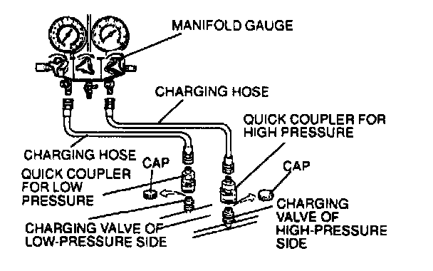

Manifold Gauge Set Installation
Manifold Gauge Set Installation
1. Fully close the valves of the manifold gauge.
2. Connect charging hoses to the high- and low-pressure side joints of the manifold gauge.
3. Connect quick couplers to the ends of the charging hoses.
4. Remove the caps from the high- and low-pressure side charging valves.
5. Connect the quick couplers to the charging valves.